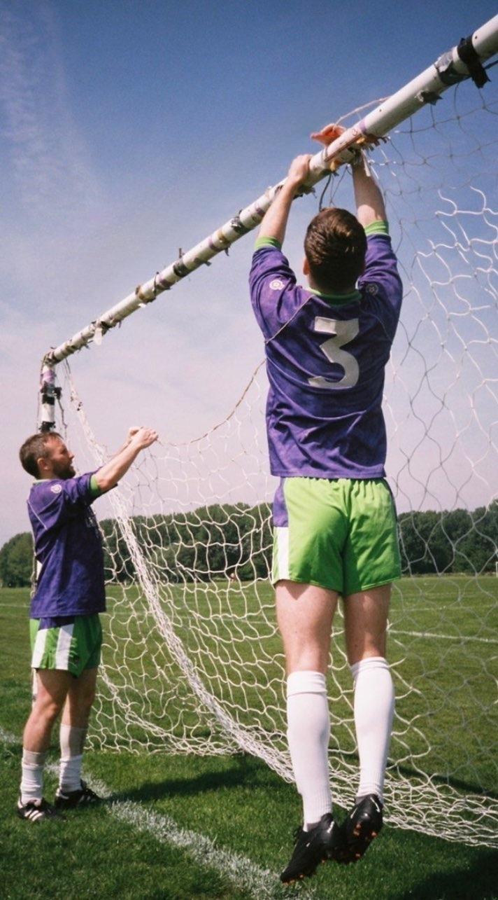

Latest Results
| Type | Date | Time | Home Team | Away Team | Result |
|---|---|---|---|---|---|
| C | 07/05/23 | 14:00 | GOZF FC 1st XI | Bristol City (London) Supporters First | 5 - 1 |
| L | 16/04/23 | 14:00 | Aberdeen Supporters Club London Branch A | Bristol City (London) Supporters First | 3 - 1 |
| L | 26/03/23 | 10:30 | Bristol City (London) Supporters First | Shepherd's Tuesday Main | 1 - 1 |
| L | 19/03/23 | 14:00 | GOZF FC 1st XI | Bristol City (London) Supporters First | 0 - 3 |
| L | 12/03/23 | 10:30 | Bristol City (London) Supporters First | London Town Football Club First XI | 0 - 3 |
| L | 05/03/23 | 10:30 | Beaujolais Fun Boys 1st team | Bristol City (London) Supporters First | 6 - 4 |
Upcoming Fixtures
| Type | Date | Time | Home Team | Away Team | Venue | Competition |
|---|---|---|---|---|---|---|
| C | 21/05/23 | 00:00 | Bristol City (London) Supporters First | Recreativo Hackney First | REGENT'S PARK - THE HUB #1 | CLSSL Plate 2022 - 2023 |
Central London Premier League Table
| POS | Team | P | W | D | L | GD | PTS |
|---|---|---|---|---|---|---|---|
| 1 | Kensington Town First | 19 | 19 | 0 | 0 | 114 | 57 |
| 2 | CSKA Clapham CSKAC | 20 | 15 | 0 | 5 | 49 | 45 |
| 3 | PG FC 1st Team | 20 | 14 | 2 | 4 | 36 | 44 |
| 4 | Sloane Sundays SLO | 21 | 13 | 2 | 6 | 11 | 41 |
| 5 | Union Canal UCFC | 21 | 11 | 4 | 6 | 20 | 37 |
| 6 | Recreativo Hackney First | 20 | 11 | 2 | 7 | 9 | 35 |
| 7 | London Town Football Club First XI | 20 | 9 | 2 | 9 | -11 | 29 |
| 8 | Jeff's Chippy First | 21 | 9 | 1 | 11 | 16 | 28 |
| 9 | Beaujolais Fun Boys 1st team | 18 | 8 | 1 | 9 | -36 | 25 |
| 10 | Versace Versace FC | 21 | 6 | 3 | 12 | -26 | 21 |
| 11 | Shepherd's Tuesday Main | 20 | 4 | 5 | 11 | -17 | 17 |
| 12 | GOZF FC 1st XI | 18 | 4 | 4 | 10 | -20 | 16 |
| 13 | Bristol City (London) Supporters First | 20 | 4 | 2 | 14 | -46 | 14 |
| 14 | Stonks Argyle SKA | 18 | 3 | 1 | 14 | -42 | 10 |
| 15 | Aberdeen Supporters Club London Branch A | 19 | 3 | 1 | 15 | -57 | 10 |
